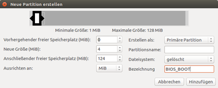
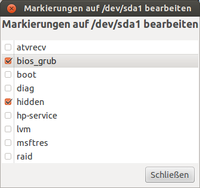
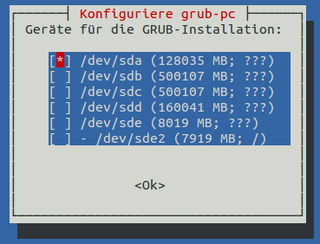

EFI Modus umstellen
Dieser Artikel wurde für die folgenden Ubuntu-Versionen getestet:
Ubuntu 16.04 Xenial Xerus
Ubuntu 14.04 Trusty Tahr
Zum Verständnis dieses Artikels sind folgende Seiten hilfreich:
Grundsätzlich ist das Starten sowie Betreiben von Ubuntu auf einem System mit einem UEFI nicht schwieriger, als auf einem System mit einem BIOS. D.h. besondere manuelle Eingriffe sind in der Regel vor, während oder nach der Installation nicht notwendig, sofern das EFI seitens des System- oder Mainboard-Herstellers sauber implementiert wurde.
Aus verschiedenen Gründen kommt aber nicht jeder mit dem EFI-Modus und den Einstellungen in dem Firmware-Setup (BIOS) zurecht und wünscht sich das "alte" Verhalten zurück. Andererseits scheut sich auch mancher, nur deswegen eine bestehende Installation gegen eine Neuinstallation aufzugeben.
Dieser Artikel befasst sich mit der Rückumwandlung einer bestehenden Ubuntuinstallation, die im EFI-Modus angelegt wurde, in eine Installation im BIOS-Modus. Die vom Benutzer eingebrachten Einstellungen dieser Installation bleiben dabei vollständig erhalten. Ein Backup der Benutzerdaten sollte man aber anlegen.
Experten-Info:
Eine einmal vom EFI-Modus auf den BIOS-Modus umgestellte Installation kann man auch wieder in den EFI-Modus retransferieren. In der Regel empfiehlt sich dann aber eine Neuinstallation.
Voraussetzungen¶
Hinweis:
Es darf kein Windows im EFI-Modus auf der gleichen Festplatte zusammen mit Ubuntu als Dualboot installiert sein. Windows verträgt ohne Nachbereitung keine Umstellung vom EFI-Modus auf BIOS-Modus. Auch ein Mischbetrieb aus EFI-Modus mit BIOS-Modus wird von GRUB 2 nicht unterstützt!
In diesem Fall sollte man für beide Betriebssysteme eine Neuinstallation im BIOS-Modus vornehmen oder das Windows vorab deinstallieren!
Vorab sollte man mit einem Installationsmedium überprüfen, ob man im Firmware-Setup (BIOS) eine Umstellung von UEFI auf BIOS vornehmen muss. Dazu muss gegebenenfalls
erst "secure-boot" deaktiviert werden
die Option "Compatibility Support Module" aktiviert werden
Bei vielen Firmware-Setups ist eine manuelle Aktivierung des Compatibility Support Module nicht möglich / erforderlich. Diese unterstützen automatisch sowohl das Starten im UEFI- als auch im BIOS-Modus. In einem solchen Fall kann eine Umstellung mit den folgenden Einstellung auch ohne Änderung im Firmware-Setup durchgeführt werden.
Umstellungen¶
Man startet das Ubuntu zum Desktop und öffnet dort mit Strg + Alt + T ein Terminal [1] und arbeitet die folgenden Befehle ab.
Achtung!
Bis zum Abschluss der hier beschriebenen Arbeiten darf der Rechner nicht neu gestartet werden. Danach kann man die Arbeiten / Reparatur nur in einer chroot-Umgebung wieder aufnehmen.
Datei fstab anpassen¶
In der /etc/fstab befindet sich die Anbindung der EFI-Partition, die für das umgestellte Ubuntu nicht mehr erforderlich ist. Um diese Partition auszuhängen gibt man in das Terminal [1] ein:
sudo umount /boot/efi
Man öffnet einen Editor [2] seiner Wahl und kommentiert in der /etc/fstab die Zeile mit der EFI-Partition
# /boot/efi was on /dev/sda1 # UUID=4682-C2C4 /boot/efi vfat defaults 0 0
durch Voranstellen einer # aus bzw. löscht beide Zeilen und speichert das dann ab.
Eintrag NVRAM löschen¶
Damit das EFI-BIOS nach der Umstellung nicht versucht, den nicht mehr gültigen Starteintrag zu benutzen, wird dieser aus dem NVRAM entfernt, indem man in das Terminal [1] eingibt:
sudo efibootmgr
welches dann diese beispielhafte Ausgabe ergibt:
BootCurrent: 0002 Timeout: 1 seconds BootOrder: 0002,0008,0009,000A,000B,000C Boot0002* ubuntu Boot0008* Windows Boot Manager Boot0009* SAMSUNG SSD 830 Series
Der hier relevante Ubuntu Eintrag Boot0002* wird dann (entsprechend angepasst an die eigene Anzeige) gelöscht mit
sudo efibootmgr -b 0002 -B
Partitionen¶
Experten-Info:
Liegt zwischen den ersten Partitionen, in der Regel die Partition für
EFI Startdateien
Wiederherstellung
Systemreserviert
und dem Ubuntu noch das Windows Betriebssystem, so ist vorab das Windows nach dieser Anweisung zu entfernen.
Man sollte in den freien, ehemals vom Windows benutzten Bereich
das Ubuntu insgesamt nach vorne verschieben
alternativ vorne eine separate /boot-Partition einrichten
eine vorhandene separate/boot-Partition nach vorne verschieben
bios-boot Partition¶
Das Ubuntu hat im EFI-Modus eine GUID-Partitionstabelle benutzt und diese muss man beibehalten. Um einen MBR für GRUB 2 installieren zu können, muss man für die GRUB 2-Dateien eine "gelöschte" Partition anlegen [3] - diese wird bezeichnet mit:

"reservierter BIOS Boot-Bereich"
Dazu kann man die vorhandene EFI-Partition benutzen, ohne dass diese zwingend verkleinert werden muss. Man öffnet z.B. die Anwendung GParted [3] und sucht dort die EFI-Partition auf. Nachdem man sich vergewissert hat, die richtige Partition ausgewählt zu haben, wählt man die Option (nachfolgend am Beispiel GParted):
 -Kontextmenü -> "Löschen"
-Kontextmenü -> "Löschen"
und legt danach eine neue Partition an mit
- -Kontextmenü -> "Formatieren als"
deren Größe neu bestimmt werden kann - minimal sollte man 4 MiB ansetzen - man kann aber auch den gesamten Bereich der ehemaligen EFI-Partition benutzen. Als Dateisystem wird 
"gelöscht"
ausgewählt und der Vorgang abgeschlossen. In einen weiteren Arbeitschritt wird der Partitionstypus gesetzt mit der Option
- -Kontextmenü -> "Markierung bearbeiten"
und setzt dann die Flags für
"bios_grub"
"hidden"
Boot Partition einrichten¶
Man kann alternativ z.B. mit GParted gleich hinter der bios-boot-Partition eine Partition mit folgenden Werten einrichten:
Größe ca. 2 GiB
Formatierung > ext3/4
Man merkt sich die lfd. Nummer der neu erstellten Partition - beispielhaft mit /dev/sda2 angenommen.
Nach dem Verlassen von GParted öffnet man ein Terminal [1] und gibt dort ein:
sudo mount /dev/sda2 /mnt sudo cp -apr /boot/* /mnt/ sudo umount /mnt sudo mount /dev/sda2 /boot
Diese Partition muss man nun noch in die /etc/fstab eintragen.
GRUB_2 neu installieren¶
Es muss der GRUB 2-Bootloader neu installiert werden. Dazu gibt man in das Terminal [1] ein:
sudo apt-get install grub-pc
Mit diesem Befehl werden sowohl die alten GRUB 2 Pakete vom EFI-System entfernt als auch auch die neuen erforderlichen Pakete installiert. Noch übrig gebliebene Pakete von grub-efi können später noch entfernt werden.
 Bei der folgenden Abfrage nach den bisherigen (eigenen) Einstellungen sollte man diese mit
"aktuell installierte Version behalten"
auswählen (Standardeinstellung) und im folgenden Fenster (siehe beispielhafte Abbildung) sehr sorgfältig die neue Position des MBR durch Auswahl mit den Pfeiltasten ↓ + ↑ festlegen und dann mit der Leertaste auswählen - es wird die aktuelle Auswahl durch [ * ] gekennzeichnet.
Abgeschlossen wird der Vorgang mit der ⏎ -Taste.
Grub_2 anpassen¶
Auch wenn mit der Installation der Pakete grub-pc die Gegebenheiten des Rechners erfasst wurden, sollte man zur Sicherheit ein Update der Grubkonfiguration vornehmen. Dazu gibt man in das Terminal [1] ein:
sudo grub-mkconfig
und untersucht die dabei erstelle Anzeige der Startdatei /boot/grub/grub.cfg auf Plausibilität und Umfang des erfassten Betriebssystemes. Erst wenn man mit den Informationen zufrieden ist, schreibt man diese fest mit Eingabe im Terminal [1]:
sudo update-grub
Nun kann man das System neu starten und die Umstellung testen. Dazu muss ggf. im Firmware-Setup (BIOS) die Bootreihenfolge neu gesetzt werden - zumindest für die Testphase reicht es, das EFI-Menü zur Auswahl der relevanten Non-UEFI-Festplatte zu benutzen.
Kernelpakete anpassen¶
Wurde die EFI-Installation auch als secure-boot aufbereitet, so bleiben die vorhandenen Kernelimages mit der beispielhaften Bezeichnung
/boot/vmlinuz-3.5.0-28-generic.efi.signed
vorerst erhalten. Diese Pakete / Images stören aber nicht und werden mit den nächsten Vorgang, bei dem man überzählige Kernel löscht, auch automatisch mit entfernt.
Links¶
Links - intern¶
EFI_Bootmanagement
 Übersicht zur Artikelserie
Übersicht zur Artikelserie EFI_Grundlagen - Alles Wissenwerte rund um Ubuntu mit einem (U)EFI-BIOS]
EFI_Installieren - Hinweise vor einer und zur Installation
EFI_Deinstallieren - Hinweise und Maßnahmen beim Entfernen eines Betriebssystemes
EFI Externer-Datenträger - Einzelnes System oder Multiboot auf externen Datenträger einrichten
EFI_Nachbearbeitung - Hinweise und Maßnahmen nach einer Installation
Das EFI_Werkzeug - (U)EFI-Menü einstellen und prüfen
EFI USB-Stick - Einen USB-Stick für UEFI aufberieten
EFI_Problembehebung - eine Sammlung von Erfahrungen, Fragen und Abhilfen
Links - extern¶
UEFI - Unified Extensible Firmware Interface
UEFI Spezifikation
 - Aufbau und Grundsätze
- Aufbau und GrundsätzeNVRAM - Non-Volatile Random-Access Memory
- Erstellt mit Inyoka
-
 2004 – 2017 ubuntuusers.de • Einige Rechte vorbehalten
2004 – 2017 ubuntuusers.de • Einige Rechte vorbehalten
Lizenz • Kontakt • Datenschutz • Impressum • Serverstatus -
Serverhousing gespendet von